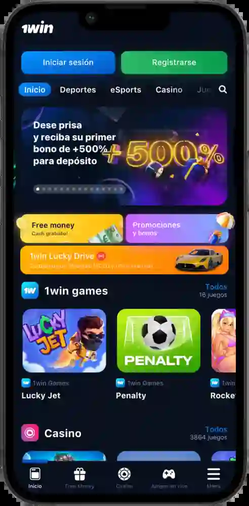
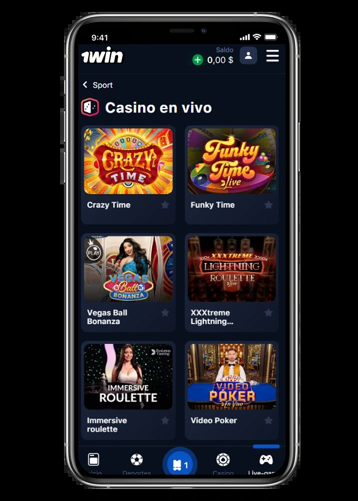
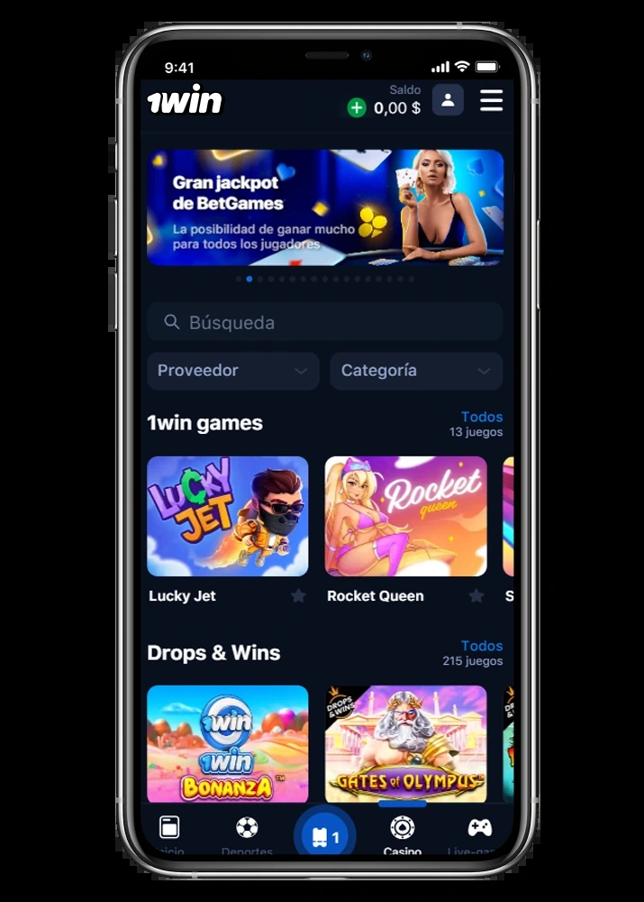

Why people search for the 1win app
The 1win app is often preferred for quicker navigation, biometric unlock where supported, and push alerts around open bets. Argentine users on variable mobile data also like lighter lobby loads compared with some desktop-heavy pages.
Download only from official operator channels. Third-party APK mirrors are a common malware vector and can phish login credentials.
Ready to explore 1win app on the official operator site? Review the live offer details before you deposit.
18+ only. Bonus wagering requirements, minimum deposit amounts, offer expiry windows, and game contribution rates vary — see operator T&Cs on the signup page before claiming any promotion. Gambling involves risk; never stake more than you can afford to lose.
Android installation outline

- Open the official 1win site in your mobile browser.
- Locate the Android app section published by the operator.
- Allow installs from the browser or file source only if you trust the official domain.
- Install, open, and sign in with existing credentials or register anew.
- Disable unknown sources again after installation.
- Reject APK links shared in random Telegram or WhatsApp groups.
- Compare the download domain character-by-character with the official site.
- Keep OS security patches current before granting storage permissions.
iOS and progressive web options
Depending on store availability in your region, iOS users may rely on a mobile web experience or an operator-published install path. Adding a home-screen shortcut can mimic app convenience without a sideloaded package.

| Path | Typical platform | Pros | Cautions |
|---|---|---|---|
| Native Android package | Android | Full feature parity | Must verify source |
| Mobile browser | Any | No install | Session cookies / bookmarks |
| Home-screen web app | iOS/Android | Fast launch icon | May lack push features |
Permissions, updates, and battery

Grant only the permissions the cashier and notifications genuinely need. Denying camera access is fine until you must upload a KYC photo. Updates fix security issues — delaying them to “finish a lucky streak” is a poor trade.
- Turn off unnecessary notification categories that nudge impulsive deposits.
- Use OS-level app timers if you tend to overrun evening sessions.
- Pair the app with the safer habits on our responsible gambling page.
Network conditions and bet-slip reliability
The 1win app only feels fast when packets arrive on time. In dense urban zones, public Wi-Fi at cafés near stadiums can look strong on the status bar while dropping packets during live bet acceptance. Prefer carrier data for in-play football, and wait for the full confirmation state before assuming a stake is accepted. Partial UI updates are a classic source of accidental duplicate taps.
Battery saver modes sometimes throttle background refresh. If odds look frozen, check power settings before assuming the market is suspended. Conversely, when a market truly suspends during a red card, do not spam submit. Spamming creates support tickets and stress without improving price.
Storage permissions for Android packages should be temporary when possible. Once the official package is installed, revisit permission screens and deny extras that are unrelated to notifications or KYC camera uploads. A gambling app does not need access to your full contact list.
iCloud or Google backup of app data can unexpectedly restore old session tokens on a replacement phone. After device upgrades, change your password and review open sessions via the account security area if offered. Shared family tablets need separate OS users — minors must not inherit an open adult session.
Push notifications about odds boosts are marketing. Turning off promotional pushes while keeping transactional messages (login alerts, withdrawal updates) is a reasonable middle path. If marketing pushes correlate with impulse deposits, disable them entirely for a month and measure whether your spend drops.
Offline moments happen on subways. Do not place a stake in a tunnel and celebrate before the train reaches signal again. Wait for confirmation. The same patience applies to cashier receipts after deposits.
Version control and sideload hygiene
Sideloaded Android packages require ongoing vigilance. When the operator publishes an update, install it from the same official channel you trusted initially. Random ‘faster Aviator APK’ links are social-engineering bait. Compare file source URLs character by character.
If your phone security suite warns about an unofficial package, stop and reassess. Gambling entertainment is not worth a stolen banking session. Our login article pairs with this app guidance for recovery steps if something already feels wrong.
Extended notes for app readers
Additional context for the app guide: adults reading from Argentina benefit from slow decision-making, written budgets, and a refusal to treat marketing banners as advice. Take ten quiet minutes before any deposit to list why you are opening the cashier at all.
Keep a simple ledger for a fortnight. Write dates, amounts, and product types. Patterns appear quickly — late-night crash games, salary-day spikes, or live football overreactions. Once visible, patterns are easier to change with deposit caps and app timers.
If a session stops being fun, end it without negotiating with yourself. Entertainment that requires a pep talk to continue is no longer entertainment. Use the responsible gambling block links when unease turns into distress.
Cross-read related hub pages instead of searching random screenshots. Internal articles on casino, app, login, bonuses, Aviator, Argentina context, and legality exist to answer different questions without repeating the same paragraph everywhere.
Finally, remember affiliate disclosures: sponsored links may earn this site a commission. That commercial fact does not change maths, law, or your household budget. Your constraints stay yours.
Revisit these reminders monthly. Habits drift. A calendar note labelled ‘budget review’ is a small tool with outsized value for anyone who wants play to remain optional and calm.
Practical checklist readers can save
Save this checklist somewhere offline: confirm official domain, set a deposit ceiling, enable stronger authentication where available, read wagering contribution rules before claiming promotions, and schedule a hard stop time. Tape the stop time next to your monitor if needed.
When travelling between provinces or abroad, re-check whether access rules and payment rails still match your expectations. Do not assume yesterday’s cashier equals today’s. Screenshots age poorly.
Talk about money stress early. Friends, family, or free support organisations can interrupt spirals that private shame extends. Seeking help is a strength move, not a spectacle.
Keep software updated on phones and laptops. Many account takeovers start with outdated browsers or malicious lookalike apps rather than clever password guesses alone.
Use separate browser profiles for everyday browsing and for any gambling logins if that mental separation helps you notice when you are about to break a limit.
Review open bets and unfinished bonus trackers before bed. Unfinished mental loops cause night-time checking. Closing loops deliberately protects sleep.
If you disagree with a settlement, gather evidence calmly and contact official support with timestamps. Parallel raging on social networks rarely improves outcomes and sometimes spreads personal data you meant to keep private.
1win app feature comparison checklist
| Check | Why it matters | Action |
|---|---|---|
| Official source | Avoid spoofed APKs | Use operator download path only |
| OS compatibility | Install failures waste time | Confirm Android/iOS guidance on site |
| Storage permission | Needed for APK installs | Grant only while installing |
| Login after install | Confirms real app wired to your account | Use known credentials; enable 2FA |
Keep this checklist beside our broader 1win app narrative so mobile setup stays deliberate rather than rushed.
Feature parity with desktop
| Capability | Desktop web | App / mobile web |
|---|---|---|
| Sports bet slip | Full | Full |
| Live casino streams | Full | Depends on connection |
| Cashier | Full | Full |
| Multi-window research | Easier | Limited |
If you research odds across tabs, desktop may still feel better. For in-play football on the go — especially Primera División evenings — the 1win app form factor wins on speed. Cross-link: login troubleshooting and casino lobby notes.
- Never jailbreak or root solely to install gambling clients.
- Avoid public Wi-Fi for deposits; use carrier data or trusted home networks.
- Screenshot confirmation IDs after large withdrawals.
- Re-read Argentina hub tips when payment rails change.
| Situation | Suggestion | Rationale |
|---|---|---|
| Stadium Wi-Fi congestion | Switch to LTE/5G | Lower bet-slip latency |
| Low battery | End session | Mistakes rise when rushing to power off |
| Roaming abroad | Check FX and data costs | Avoid surprise fees |
18+. This site publishes informational content for adults only. Gambling can be addictive — set limits, take breaks, and seek help if play stops being fun.
- Support and education: BeGambleAware
- Advice and treatment pathways: GamCare
If you feel play is becoming stressful, pause and contact free support resources. Nothing on this page is financial advice.